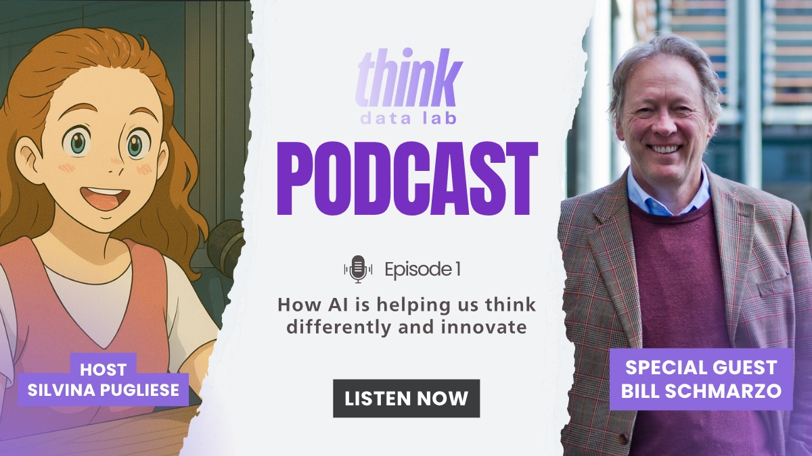
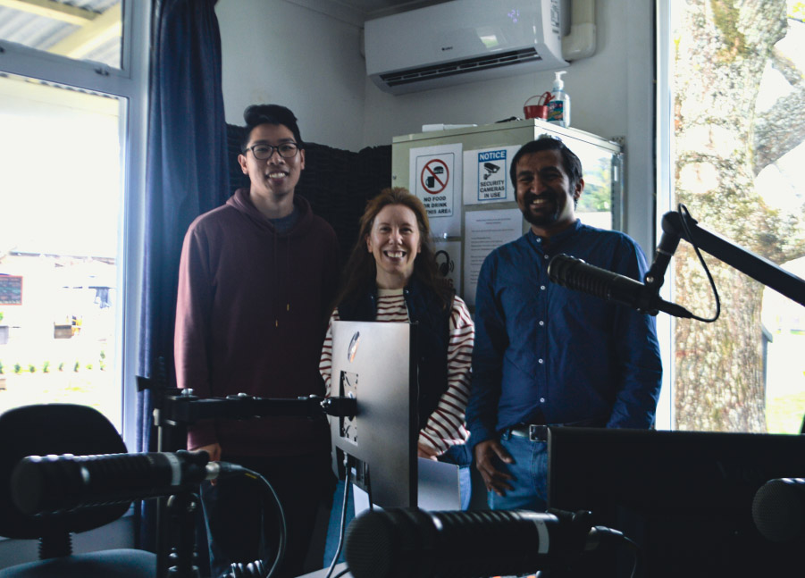
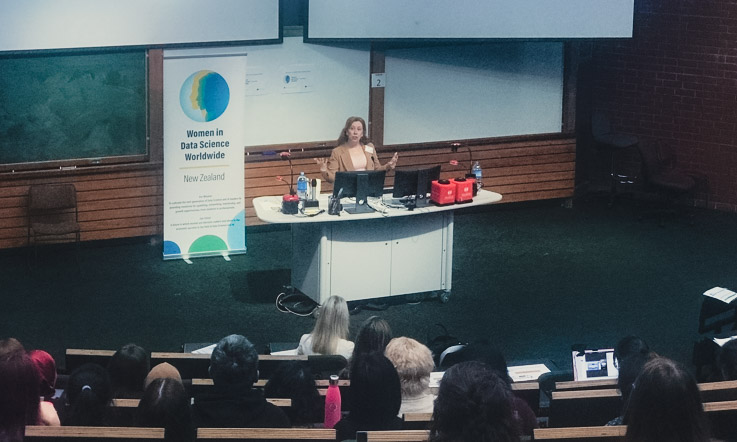

Data and information: there is too much of it. Making sense of the most relevant information and creating value with it is what really matters, and that's a deeply human endeavour.
A selection of Silvina’s latest podcasts, presentations, and articles



"Dr Silvina Pugliese's compelling and thought-provoking presentation on 'How Small Businesses Can Make The Most Of Using AI Tools' was a highlight of our speaker calendar this year at the Nelson AI Sandbox. Her practical, incisive and clear-minded view of how to use AI meant our audience was highly satisfied with this session. We want to thank Dr Pugliese for bringing us a brainy yet approachable view on how to use data analysis techniques, combined with deep knowledge of GPTs, to our community."
"Silvina displays a clear passion for data and sees the important role it can play in better futures for people and society. She 'walks the talk' with her volunteer activities in data and coding education, and she is always looking for ways to use her skills productively."
"Honest, helpful advice. Silvina is a great listener who gave advice specific to my situation and more general advice also."
"Kia ora Silvina, it was a good learning and chatting with you this afternoon. Your Business Analytics insights and experiences motivate me to keep involved in the industry."
"I'm currently pursuing the Master of Professional Business Analysis and your posts are greatly helpful!"
"Hello Silvina, I really enjoyed your presentation on the lessons learned in data analytics at the WiDS conference."